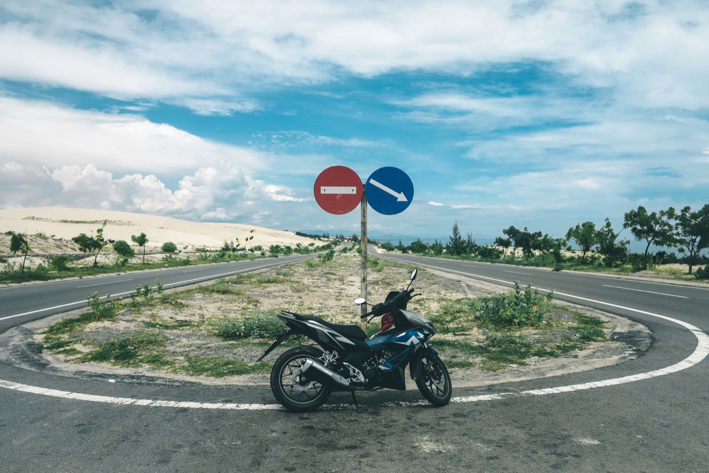

Телефон и навигатор на байке во Вьетнаме
В незнакомом городе навигатор очень помогает, но телефон не должен отнимать взгляд от потока. Маршрут лучше подготовить до старта, а любые изменения делать только после полной остановки в безопасном месте.
Настрой маршрут заранее
- проверь конечную точку и район, а не только название заведения;
- посмотри первые два-три поворота;
- скачай офлайн-карту на случай слабой связи;
- отключи лишние уведомления;
- поставь достаточную громкость голосовых подсказок.

Каким должен быть держатель
Телефон должен фиксироваться минимум в четырёх точках и не закрывать приборы, зеркала или поворот руля. После установки поверни руль до упора в обе стороны и проверь, что крепление ничего не задевает. Дешёвый зажим без страховки может раскрыться на яме.
Чехол или страховочная петля полезны, но не должны мешать охлаждению телефона. Под прямым солнцем устройство быстро перегревается, особенно во время зарядки.
Дождь и зарядка
Даже влагозащищённый телефон лучше убрать в герметичный чехол перед сильным ливнем. Разъём питания особенно чувствителен к воде. Провод закрепи так, чтобы он не цеплялся за рычаги и не натягивался при повороте руля.
Чего нельзя делать в движении
Не набирай адрес, не отвечай на сообщения и не держи телефон в руке. Если пропустил поворот, продолжай движение спокойно и дай навигатору перестроить маршрут. Резкий манёвр через поток опаснее лишних двух минут дороги.
Телефон на парковке
Перед тем как отойти от байка, забери телефон и съёмную часть крепления, если она легко снимается. Не оставляй устройство под сиденьем на солнце: закрытый багажник быстро нагревается.
Рабочая схема
- Построил маршрут и убрал уведомления.
- Надёжно закрепил телефон.
- Включил голосовые подсказки.
- Ошибся — не дёргаюсь, еду дальше.
- Для изменения маршрута останавливаюсь вне проезжей части.
Для первых поездок также пригодится наш гид по движению во Вьетнаме.